High-level prompt
“Replace server prints with logging.”
- Names the desired delta
- Deliberately omits implementation detail
- Cheap for a human to write
A plan is not the note you write before the real work. It is the high-impact prompt that carries the work—and a template is the system that keeps producing that prompt correctly.
Mastery promise. By the end, you will be able to explain the prompt → plan → template → HOP ladder, generate class-specific plans from the real TAC-3 templates, execute them with fresh agents, grade the evidence rather than the performance, and run the same planning system headlessly.
A capable engineer can plan a change, hold exceptions in working memory, explain them to an agent, correct the agent mid-run, and still believe the plan worked. What worked was the engineer’s invisible context. The plan was never tested as an asset.
TAC-3 removes that hidden support. Planning becomes a file. The file is created by a class-specific template. A fresh agent receives the file through a tiny universal executor. Validation commands and reproduction steps make the result checkable. Finally, the same planning template runs in programmatic mode without an interactive session. The unit under test is no longer “did this conversation go well?” It is “can this encoded process repeatedly carry a class of work from a small request to evidence?”
The course repository makes the argument with unusually tangible artifacts. The 749-line specs/init_nlq_to_sql_to_table.md already demonstrates that a natural-language plan can carry an entire application. Four short command files then encode how to plan chores, bugs, and features and how to execute any resulting plan. The underlying natural-language SQL application is a workbench. The tactic lives in .claude/commands/.
Planning stops being pre-work once an agent can execute the artifact directly. The plan becomes the most information-dense prompt in the workflow.
1 · Hook — concrete failure
Imagine a plan that says “add query history.” The author then spends twenty minutes telling the implementer where history belongs, what existing API shapes to follow, what tests matter, and which UI constraint was non-negotiable. The document did not carry the task. The author did. TAC-3 calls this out by changing the standard: if the plan is the prompt, the plan must contain enough structure for a fresh agent to act without inheriting the planning conversation.
2 · Picture — scale, do not switch mediums
“Replace server prints with logging.”
Inventory, files, ordered tasks, validation commands, notes.
3 · Story — the lesson’s thesis appears on screen
Dan moves through the vocabulary—plan, specification, PRD—not to establish subtle differences but to collapse them into one function: a prompt scaled up for high impact. Later he calls plans “staging environments for code.” That phrase matters because a staging environment is inspected before production. You can refine the natural-language representation while changes are still cheap, then expand it into code through the implementer.
4 · Name it — Dan’s term + plain English
5 · Worked example — evidence already in the repo
specs/init_nlq_to_sql_to_table.mdA 749-line initial plan that built the natural-language SQL application carried into TAC-3.
app/client/**The Vite/TypeScript interface that lets a user upload sample data and ask questions.
app/server/**The FastAPI/SQLite implementation with tests, LLM translation, schema inspection, and query execution.
.claude/commands/**The next level: files that encode how to produce future plans for different classes of work.
The causal claim is visible: the large plan predates the built application, and TAC-3 keeps the plan in the codebase. You can inspect, version, hand off, and improve it. That durability is the difference between a chat explanation and an engineering artifact.
6 · You try — three-minute discrimination drill
Pass if you classify by what a fresh agent can do from the artifact, not by file length or heading style.
7 · Common fail + fix
The tell is that you generate a plan, open another session, then retype a long explanation before asking for implementation. Your second explanation is the real prompt; the plan is decorative. Fix it upstream: add the missing constraints, relevant files, order, and validation to the plan. Then open a genuinely fresh instance and pass only the executor plus the plan path.
8 · Current practice overlay
9 · Retrieval check
Complete Dan’s ladder: “It’s a plan. It’s a ___ . It’s a ___.”
A specification; a PRD. These are prompts scaled up for high impact.
What behavior proves a plan is the prompt?
A fresh agent can receive the plan as its instruction and carry the task without a human rebuilding hidden context in chat.
10 · Teach-back prompt
Explain why “the plan is the prompt” is a testable engineering claim rather than a motivational slogan. Use the 749-line initial spec and the fresh-agent criterion as evidence.
Pass if your listener can distinguish a durable executable plan from documentation that still needs its author.
A code template repeats an artifact shape. An engineering template repeats a problem-solving shape: how to research, structure, validate, and report a class of work.
1 · Hook — concrete failure
Hand-writing every plan feels responsible, but the cost repeats. You remember to add reproduction steps to one bug and forget them in the next. A feature plan contains acceptance criteria because the author was careful; a chore plan omits test commands because the author was rushed. The variability is not in the problem alone. It is in your planning process. Templates amortize that judgment.
2 · Picture — class in, plan out
Known maintenance outcome.
Symptoms → reproduction → root cause.
User value → phased design → acceptance.
A reviewable plan in specs/.
The same /implement HOP.
3 · Story — tactic three is located in the course arc
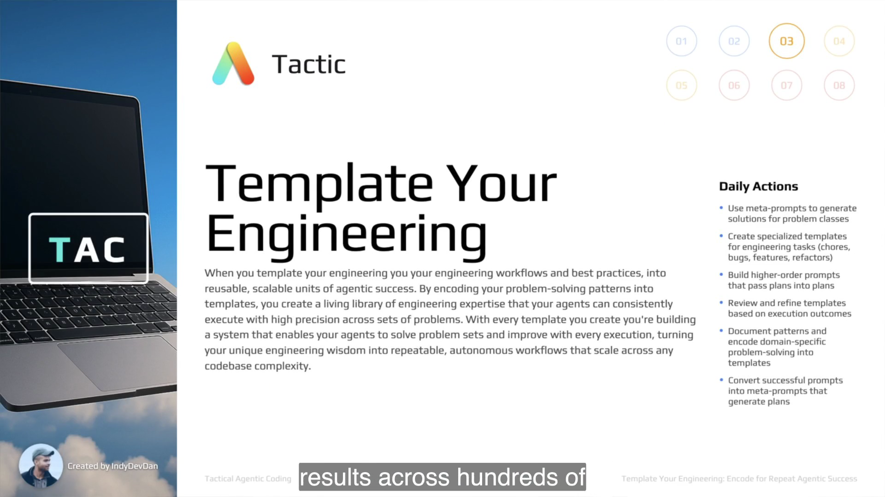
The slide’s body contains a small typo, so the clean lesson wording is the safer definition: encode problem solving into reusable units that you, your team, and your agents can see, use, and improve. That final verb prevents templates from becoming frozen bureaucracy. Outcomes are feedback for the next version.
4 · Name it — Dan’s term + plain English
5 · Worked example — the tactic on disk
.claude/commands/chore.md53 lines: maintenance planning with description, files, ordered tasks, validation, and notes.
.claude/commands/bug.md69 lines: adds symptoms, expected/actual behavior, reproduction, root cause, and minimal-fix discipline.
.claude/commands/feature.md91 lines: adds user story, phased implementation, testing strategy, and acceptance criteria.
.claude/commands/implement.md12 displayed lines: executes any plan and reports a summary plus git diff --stat.
There is no application code in these four files. Their power comes from putting team judgment into the agent’s instruction surface. The separate /install command reinforces the pattern by asking an agent to run reusable setup work, including scripts/copy_dot_env.sh.
6 · You try — map work to process
Suggested classification: chore; bug because reproduction/root cause are essential; feature because value and behavioral acceptance must be designed.
7 · Common fail + fix
Uniformity feels elegant but erases the questions that define the work. A bug needs a causal explanation and a before/after reproduction. A feature needs user value, integration phases, and acceptance boundaries. A chore benefits from a smaller surface. Fix the abstraction at the class boundary: share the common skeleton while specializing the plan format.
8 · Current practice overlay
9 · Retrieval check
What does a TAC-3 planning template output?
A plan in specs/, not code.
For which three audiences must encoded engineering remain visible and improvable?
You, your team, and your agents.
10 · Teach-back prompt
Explain to a skeptical teammate why chore, bug, and feature planners should share a skeleton but not a plan format. Give one section whose absence would damage each work class.
Pass if the defense is about engineering risk and evidence, not personal formatting preference.
The human supplies the outcome. The template supplies the research procedure, boundaries, structure, and verification floor. The agent fills the gap.
1 · Hook — concrete failure
A high-level prompt is intentionally void of detail. If you force every file path, edge case, and test command into the invocation, you are hand-writing the plan inside a shell line. If you provide only the outcome with no planning template, you get shallow improvisation. The meta prompt resolves the tension: a small input enters a large, reusable planning procedure.
2 · Picture — the expansion boundary
“Replace all server print statements with proper Python logging…”
Read README, inspect bounded files, fill exact sections, preserve behavior, seed validation.
↓ agent research ↓specs/replace-print-with-logging.md
3 · Story — one sentence goes in
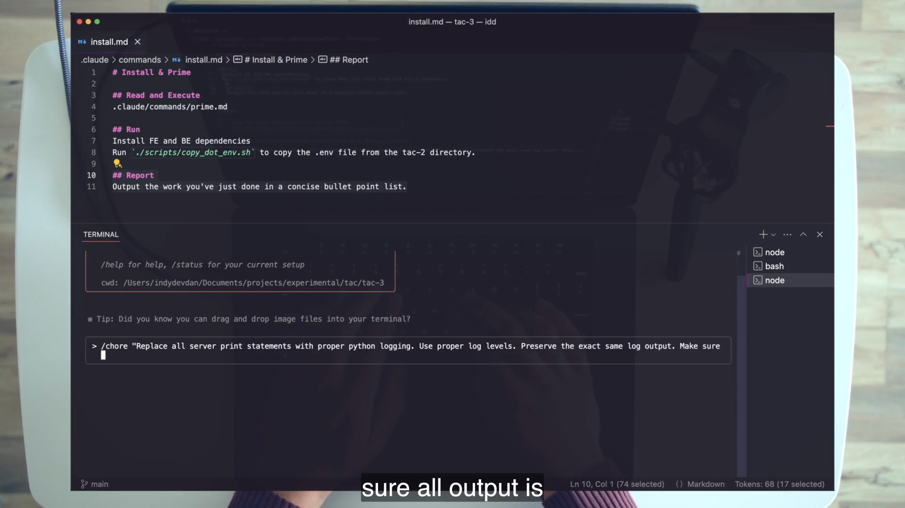
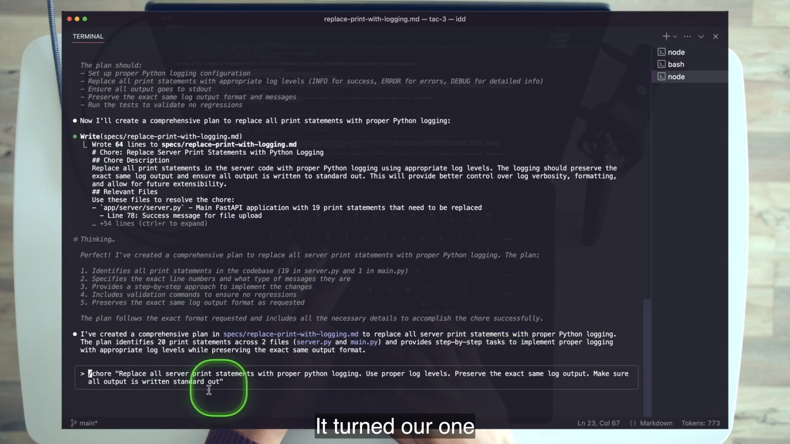
server.py plus one in main.py.4 · Name it — Dan’s term + plain English
5 · Worked example — reconcile the evidence
The on-camera agent says “20 across two files.” The generated line inventory visible in the frame does not support that prose total.
app/server/server.py contains 18 print( lines; app/server/main.py contains one. Total: 19.
This discrepancy is not a footnote to hide. It teaches how to operate generated plans: inspect enumerated evidence, cross-check the repository, and correct the plan before firing the implementer. “Plan is prompt” increases the importance of review because an error in the staging representation will be expanded into code.
6 · You try — inspect the handoff
Before opening chore.md, write the sections a logging plan must contain. Then compare your list with the actual format: Chore, Chore Description, Relevant Files, Step by Step Tasks, Validation Commands, Notes. Circle which sections come from the template rather than the one-sentence input.
Pass if you recognize that nearly all structural quality is encoded in the template.
7 · Common fail + fix
/chore to edit codeThe command completes when the plan exists. That is phase one. Telling the same session “now implement it” collapses the learning architecture and carries hidden context forward. Fix: review the generated spec, commit or otherwise preserve it, open a fresh instance, and invoke /implement specs/<plan>.md.
8 · Current practice overlay
9 · Retrieval check
Define meta prompt without using the word template.
A prompt that builds another prompt; here it researches the repository and writes an executable plan.
What are the input and output artifacts in the logging demo?
Input: a one-sentence chore string passed through $ARGUMENTS. Output: the observed 64-line specs/replace-print-with-logging.md plan.
10 · Teach-back prompt
Teach why a short invocation and a detailed output do not imply magic. Identify exactly where the missing detail comes from and which evidence should be checked before implementation.
Pass if you name template instructions, repository research, exact plan format, and plan review.
The files look like ordinary Markdown. Their leverage comes from clean boundaries: purpose, instructions, context scope, output contract, and the request slot.
1 · Hook — concrete failure
You copy chore.md into another project but leave README.md, app/**, scripts/**, and the Python test command untouched. The agent follows the template faithfully and produces a vague or irrelevant plan. The failure is not “AI does not understand my codebase.” You encoded the wrong search boundary and validation floor.
2 · Picture — the five-part contract
What artifact must be created?
How should research and reasoning proceed?
Where may the agent look?
What exact output must be filled?
What is unique about this run?
3 · Story — the ordinary file is opened
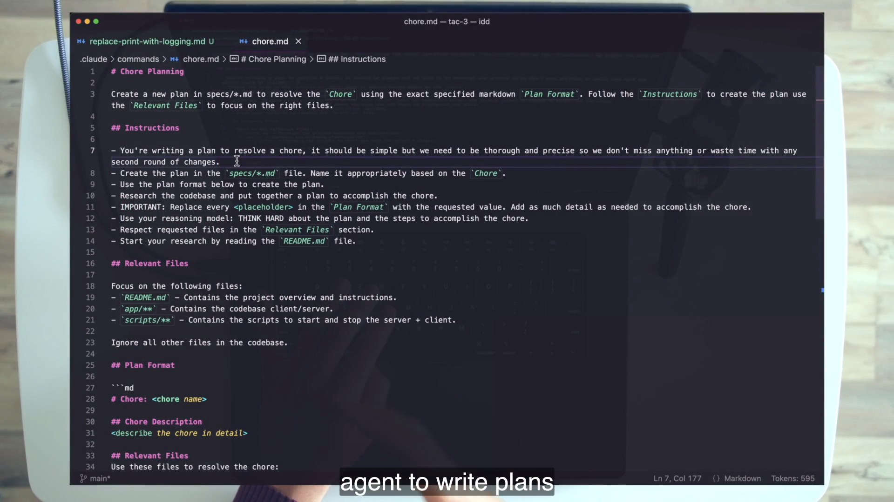
The accessibility is the point. A teammate can review the planner the same way they review a runbook. They can see why the agent starts at README.md, why every placeholder must be replaced, why unrelated files are ignored, and which validation command every plan must retain.
4 · Name it — Dan’s term + plain English
5 · Worked example — compare specializations
| Template | Sections that reveal its engineering class | Risk being controlled |
|---|---|---|
chore.md | Description, files, ordered tasks, validation, notes | Missing a maintenance detail or regression |
bug.md | Symptoms, expected/actual, problem/solution, reproduction, root cause | Fixing the symptom or making a broad speculative change |
feature.md | User story, phased implementation, testing strategy, acceptance criteria | Building code without user value, integration order, or a finish line |
The bug template explicitly asks for surgical, minimal changes and says to keep the solution simple. The feature template asks the planner to research existing patterns and design for extensibility. These are not decorations; they are compressed review feedback placed before code exists.
6 · You try — template audit
tac/tac-3/.claude/commands/.cd app/server && uv run pytest command and explain why removing it weakens every generated plan.Pass if your annotations connect form to risk rather than merely counting headings.
7 · Common fail + fix
A generated plan containing <describe the root cause> has not met the output contract. So has a ported template whose Relevant Files point at nonexistent directories. Fix the template, not the downstream prose: keep the instruction to replace every placeholder, make the search scope honest, and seed validation that actually runs in this repository.
8 · Current practice overlay
9 · Retrieval check
Name the five common template parts in order.
Purpose line; Instructions; Relevant Files; Plan Format; final work-class section containing $ARGUMENTS.
Name two sections bug planning adds beyond the chore shape.
Steps to Reproduce and Root Cause Analysis; Problem and Solution Statements are also valid.
10 · Teach-back prompt
On a blank page, draw the five-part template. Then add the minimum unique sections for a bug and explain the causal role of each.
Pass if another engineer could recreate a safe bug planner from your drawing.
Planning specialization creates many plan shapes. Execution stays composable because one tiny prompt accepts those plans as input.
1 · Hook — concrete failure
You add logging-specific instructions to implement.md, then SQL-safety instructions, then UI conventions. Soon the “universal” executor is a second planning document with conflicting branches. Every new work class changes it. The abstraction is backwards: task detail belongs in the plan; the executor should provide the stable act of reading, implementing, and reporting.
2 · Picture — prompts passed into prompts
specs/<plan>.mdContains task-specific research, files, steps, validation, and notes.
/implement $ARGUMENTSReads the plan, reasons, implements, summarizes, and reports the diff statistic.
3 · Story — definition, file, and effect share one frame
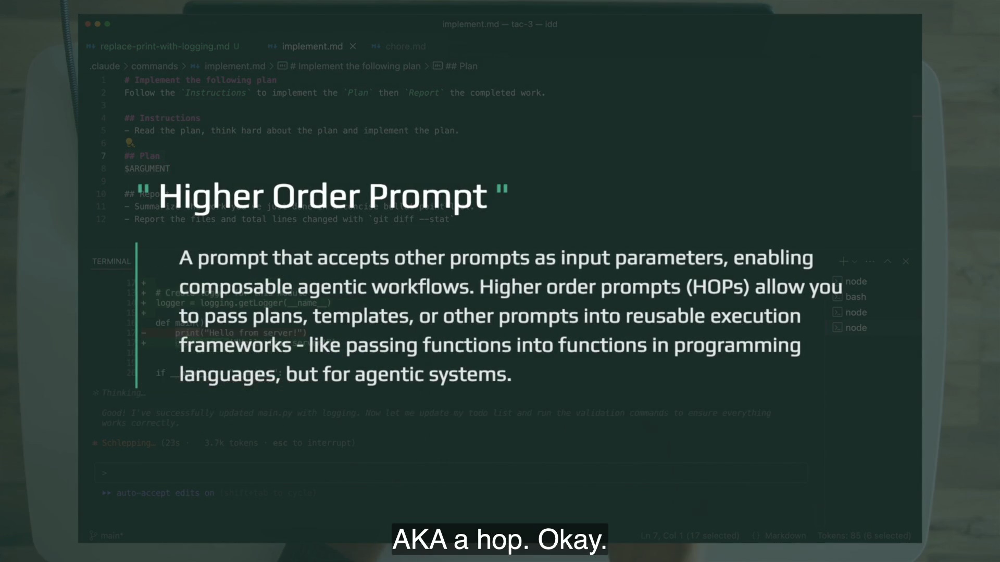
implement.md receives $ARGUMENTS under ## Plan while the logging diff flows.The file displays as twelve lines in the editor; wc -l reports eleven because the final line lacks a trailing newline. The operational fact is its smallness. It has a purpose, one instruction, a Plan slot, and a Report contract. Power arrives through the plan.
4 · Name it — Dan’s term + plain English
5 · Worked example — the complete executor
PurposeFollow the Instructions to implement the Plan, then Report completed work.
## InstructionsRead the plan, think hard about it, and implement it.
## Plan$ARGUMENTS receives the task-specific plan path.
## ReportConcise bullets plus files and total lines changed from git diff --stat.
/implement specs/replace-print-with-logging.md runs the logging plan. The same executor later runs the SQL-injection plan. This is the concrete payoff of composition: specialized plan producers converge on a stable plan-consuming interface.
6 · You try — boundary test
Classify each addition: “preserve exact log message shapes,” “run the plan’s validation commands,” “after implementation, report deviations from the plan,” “sanitize SQL identifiers.” Put task-specific items in the plan; stable cross-plan behavior belongs in an executor or HOP variant.
Pass if logging and SQL detail stay out of the universal executor, while implement-and-review becomes a legitimate reusable variant.
7 · Common fail + fix
A larger executor is not automatically stronger. If it duplicates plan sections or names application files, it couples execution to one task and makes conflicting sources of truth. Fix by moving task detail into the spec. Keep only cross-plan behavior—implement, validate, review, report—in the HOP.
8 · Current practice overlay
9 · Retrieval check
What are implement.md’s four parts?
Purpose, Instructions, Plan with $ARGUMENTS, and Report.
Why is its smallness an architectural feature?
It stays generic across all plans; task-specific power flows into it through the plan file.
10 · Teach-back prompt
Explain meta prompt versus HOP using inputs and outputs. Use /chore and /implement, then say where validation responsibility lives.
Pass if you say: meta prompt produces a plan; HOP consumes a plan; the plan carries task validation and the executor runs the work/report contract.
The course-era phrase THINK HARD is period-specific. The durable move is deliberate: spend more reasoning compute while the plan is still cheap to change and expensive to get wrong.
1 · Hook — concrete failure
An agent races through planning, guesses the root cause, produces a plausible task list, and then spends a large implementation run correcting those guesses in code. The cheap phase was starved; the expensive phase absorbed the uncertainty. A second failure is the mirror image: writing “think hard” on every trivial command until the phrase becomes ritual rather than resource allocation.
2 · Picture — reason before expansion
Resolve scope, dependencies, root cause, order, tests, and completion evidence.
Expand the approved natural-language representation into files, commands, diffs, and reports.
3 · Story — the keyword appears in both phases
chore.md, bug.md, and feature.md each ask the agent to use its reasoning model and “THINK HARD.” implement.md says to read the plan, think hard about it, and implement it. In the lesson’s Claude Code era, Dan describes “think” as an information-dense keyword that activates additional reasoning.
4 · Name it — Dan’s term + durable translation
5 · Worked example — the SQL bug
“SQL statements are not being escaped” is not yet a root cause. The shipped repository has a ten-keyword substring blocklist followed by raw cursor.execute(sql_query) in core/sql_processor.py. It also interpolates identifiers into SQL, including DROP TABLE IF EXISTS {table_name} in server.py. SQLite’s execute() rejects stacked statements, so a plan that assumes every classic multi-statement payload will work is shallow.
Planning-grade reasoning must distinguish value parameterization, identifier validation, query-shape restrictions, direct test surfaces, and UI/LLM nondeterminism. That analysis determines which code and tests belong in the fix before implementation begins.
6 · You try — budget decision
Compare two tasks: correcting a typo in a README and designing a minimal SQL-safety fix across query values and identifiers. For each, list unknowns, blast radius, and proof. Assign a low, medium, or high planning budget and justify it.
Pass if the security task receives more investigation because uncertainty and consequences are greater—not because its prompt contains stronger adjectives.
7 · Common fail + fix
Repeatedly writing “think hard” does not replace relevant context, a clear output contract, or tests. If the agent lacks the right files or the template asks the wrong questions, extra reasoning may produce a more articulate wrong plan. Fix the information surface first, then allocate reasoning in proportion to the decision.
8 · Current practice overlay
9 · Retrieval check
What did THINK HARD mean in the course?
An information-dense keyword intended to activate additional reasoning in course-era Claude Code.
What principle transfers when the literal mechanism changes?
Deliberately allocate more reasoning compute to difficult, high-impact planning work before decisions expand into code.
10 · Teach-back prompt
Teach why the words THINK HARD may age while the decision to buy reasoning at the planning compression point remains current.
Pass if your explanation avoids both magical thinking and blanket token minimization.
A rolling conversation feels informed. A fresh instance is deliberately ignorant. That ignorance reveals whether your prompts, plans, and templates actually carry the work.
1 · Hook — concrete failure
The planner explored the repository, rejected two approaches, and generated a thin spec. The same session then implemented successfully because it remembered the discarded approaches and unstated constraints. A teammate opens the spec tomorrow and fails. The conversation was the hidden dependency; the artifact only appeared reusable.
2 · Picture — three reasons, four KPIs
Give every available context token to the task at hand.
Force prompts and plans to have zero conversational dependencies.
Prepare the same units to run where no person maintains the chat.
Executor + plan define the starting perspective.
Failures point back to inspectable files.
3 · Story — eight terminals make the doctrine visible
The lesson uses separate instances for installation, chore planning, chore implementation, bug planning, bug implementation, and headless feature planning. Dan asks why he keeps abandoning useful context and answers emphatically: the system must decouple performance from the conversational context window.
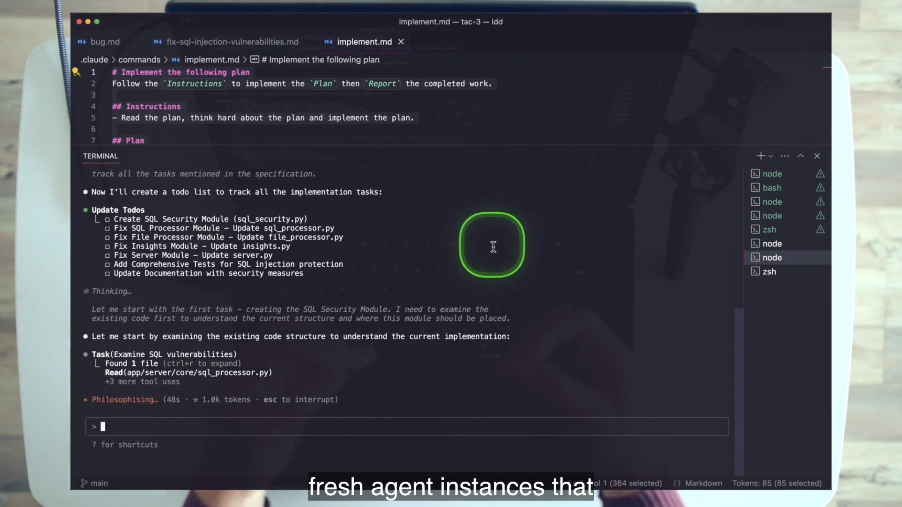
4 · Name it — Dan’s doctrine
5 · Worked example — isolate the logging handoff
.claude/commands/implement.mdIf the fresh implementer cannot preserve stdout, the response is not to resume the planning chat. Add the missing requirement to the plan or template, regenerate if needed, and rerun. The failure creates an improvement trail.
6 · You try — dependency audit
Take a recent successful agent conversation. List every fact introduced after the original request. Mark which facts appear in a durable file. For every unrecorded fact needed to reproduce the result, choose its home: repository documentation, template, plan, test, or executor contract.
7 · Common fail + fix
A fresh agent repeats some repository reading, which can look wasteful. But repeated deterministic priming is cheaper than an irreproducible success that depends on unknown chat state. Fix the repeated cost by improving concise repository docs and scoped research instructions—not by preserving an opaque conversation forever.
8 · Current practice overlay
9 · Retrieval check
Recite the three reasons for fresh agents.
Focus context on one task; force zero-dependency reusable/improvable assets; prepare for off-device runs.
Which KPI ultimately approaches zero?
Human presence. The associated direction is size up, attempts down, streak up, presence toward zero.
What should be knowable at implementation boot?
The agent’s perspective should derive from the repository, the generic executor, and the plan—not hidden planning chat.
10 · Teach-back prompt
Explain why a fresh agent is simultaneously a reliability test, an architecture constraint, and preparation for off-device execution. Tie it to all four KPIs.
Pass if the listener stops treating chat memory as a free dependency.
Validation commands, focused tests, diff review, and manual reproduction turn the plan from a story about success into a loop that can detect failure.
1 · Hook — concrete failure
The logging agent replaces prints, runs the existing suite, and declares success. But no test asserts stdout message shape, and one call still prints. Or the SQL fix adds tests for keyword blocking while identifier interpolation remains. A green command proves only what it covers. Self-validation begins when the plan names the relevant observations, not when the agent emits a check mark.
2 · Picture — nested evidence
uv run pytestrg 'print\('app output / direct testgit diffgit diff --statThe agent can execute this stack, but the reviewer still checks whether the stack matches the claims.
3 · Story — precise diff, then bug plan
The logging plan inventories exact call sites and maps success messages to informational logging and error paths to error logging. During implementation, the diff replaces those calls. Later the bug plan adds root-cause analysis and a proposed sql_security.py, forcing the security change to have an explicit mechanism rather than a generic “escape inputs” instruction.
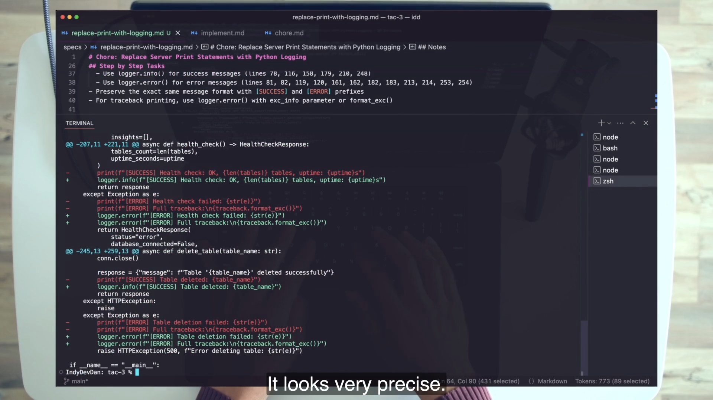
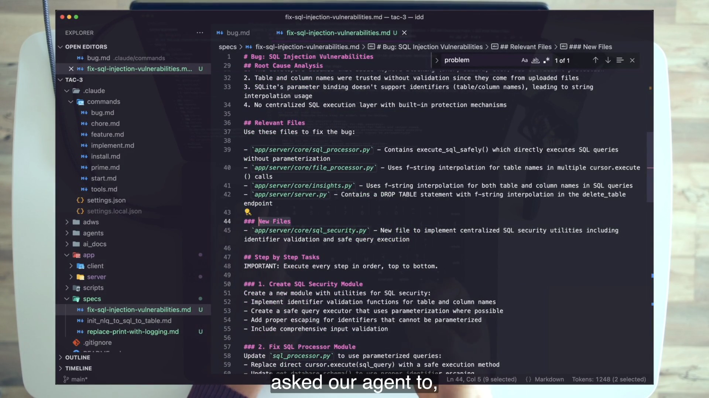
4 · Name it — Dan’s leverage point
5 · Worked example — grade invariants, not magic totals
| Claim | Evidence | Calibration |
|---|---|---|
| Regression-free baseline | cd app/server && uv run pytest | The shipped repo collects 34 tests. There are 37 test_* definitions, but three are fixtures. |
| No raw server prints | rg -n 'print\(' app/server/server.py app/server/main.py | Require zero hits after the “all server prints” chore. |
| Message semantics preserved | Direct behavior or app run shows the same [SUCCESS]/[ERROR] payload shapes on stdout. | Do not infer this from pytest unless a test asserts it. |
| SQL risk reduced | New focused cases exercise raw query and identifier surfaces; all baseline tests remain green. | Dan’s 18-new/52-total result is one run, not the grading constant. |
6 · You try — claim-to-check matrix
For the logging chore, list four claims and one independent check per claim. For the SQL bug, include at least one direct unit or integration check that does not depend on an LLM turning a UI sentence into a specific SQL string. Mark which check the agent runs and which one you personally repeat.
7 · Common fail + fix
Blind trust treats the agent report as proof. Blind rejection makes the human rerun everything without improving the system. The repair is calibrated redundancy: embed deterministic checks in the plan, let the agent run them, inspect the diff and raw results, then independently reproduce the risk or key behavior. Feed missed checks back upstream.
8 · Current practice overlay
9 · Retrieval check
Name two self-validation mechanisms shown in the lesson.
Plan-embedded Validation Commands and the agent’s review of its own diff followed by fixes.
What does the human still do?
Inspect the plan/diff and independently repeat key behavior or reproduction plus the test command.
What is the real shipped baseline test count?
34 collected tests. The 37 test-named functions include three pytest fixtures.
10 · Teach-back prompt
Use the logging and SQL examples to show how claims, checks, coverage boundaries, diff review, and human reproduction fit together.
Pass if you grade invariants and evidence rather than repeating the video’s run-specific totals.
The same feature template that works interactively can run through claude -p, stream structured events, and leave a plan on disk while nobody maintains a conversational session.
1 · Hook — concrete failure
A planning prompt is reusable, but someone must open the tool, paste it, wait, notice success, and tell the next system what happened. The prompt is encoded; the trigger and output interface are not. Off-device agentic coding requires the same unit to run from another program and emit machine-readable evidence.
2 · Picture — invisible agent, visible artifacts
plain terminal / programclaude -p "/feature …"stream-json → .jsonlspecs/query-history-panel.mdinspect / route / implement3 · Story — a plan appears without an interactive agent
Dan runs the feature template in Claude Code’s programmatic form, selects stream JSON, bypasses permissions for this narrowly scoped demo, chooses an Opus model, requests verbose output, and redirects the stream into feature_plan_raw_agent_logs.jsonl. The file appends system, assistant, and tool-result events. The model visible in the captured JSONL is claude-opus-4-20250514.
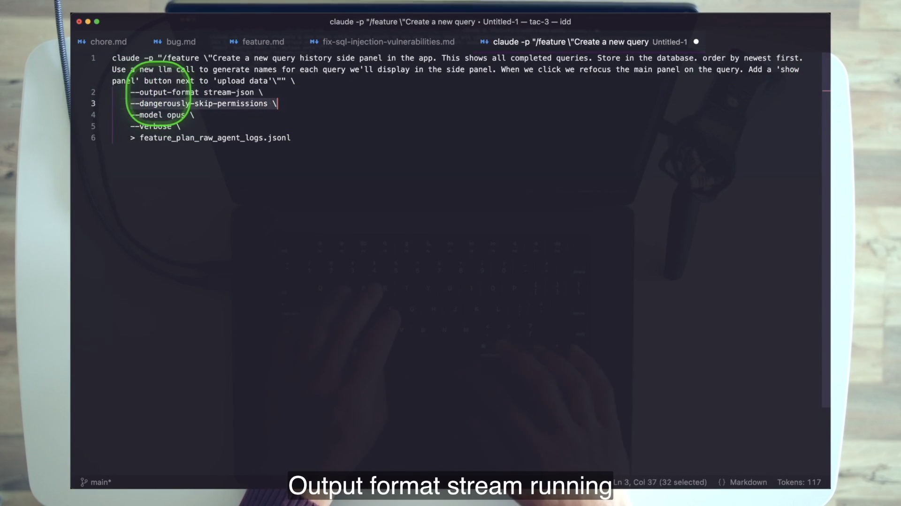
/feature template into a callable planning phase.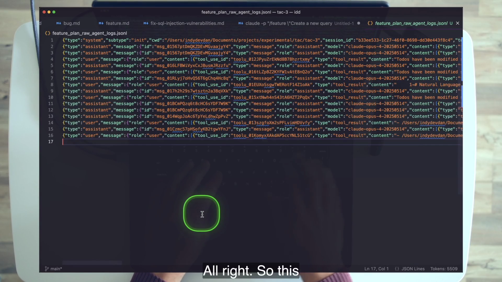
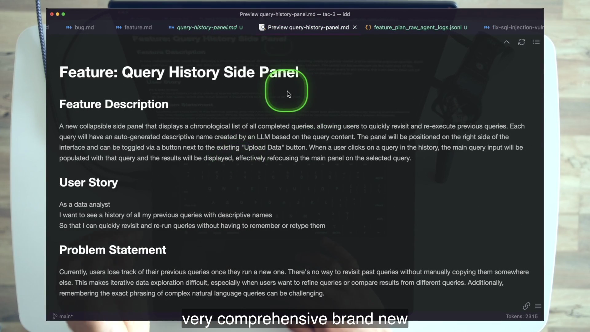
4 · Name it — Dan’s bridge
5 · Worked example — read the historical command safely
claude -p "/feature \"Create a new query history side panel…\"" \
--output-format stream-json \
--dangerously-skip-permissions \
--model opus \
--verbose \
> feature_plan_raw_agent_logs.jsonlThe durable shape is prompt mode + template invocation + structured stream + captured artifact. The exact model alias drifts. The global permission bypass is not a recommendation; Dan scoped it to a low-risk planning run in a demo repository. Even there, the safer lab posture is a disposable standalone clone with no valuable secrets or changes.
6 · You try — parse before you chain
tail -f.specs/*.md file has a user story, three implementation phases, testing strategy, and acceptance criteria.7 · Common fail + fix
A planning prompt can still read files, execute tools, or write artifacts. --dangerously-skip-permissions removes a control; intent does not make that control irrelevant. Fix by narrowing environment, credentials, filesystem scope, tools, and permissions. Prefer allowlists, permission modes, hooks, or sandboxing when available. Preserve the course command as historical evidence, not a default production posture.
8 · Current practice overlay
9 · Retrieval check
Which template ran headlessly, and what plan appeared?
/feature; the observed result was specs/query-history-panel.md.
Name the four displayed flags after the prompt.
--output-format stream-json, --dangerously-skip-permissions, --model opus, and --verbose.
Why is JSONL more than “logs”?
It is a line-delimited machine-readable event interface that another process can observe, parse, route, and validate.
10 · Teach-back prompt
Walk from the same repo-local /feature template to a noninteractive caller, event stream, and durable plan. Then explain why permission bypass and programmatic execution are separate design decisions.
Pass if the listener can preserve composition while tightening safety.
Generic agent tools know how to act. Your templates teach them how this codebase and team decide. That encoded specificity is where repeatable engineering becomes differentiated engineering.
1 · Hook — concrete failure
A new model arrives with better coding benchmarks. The team stops maintaining its templates and asks the model to “figure it out.” It produces impressive local changes but misses the database migration ritual, the team’s UI boundaries, or the exact acceptance evidence. Capability improved; organization-specific knowledge vanished from the interface.
2 · Picture — the self-improving loop
template + requestplan / build / evidencetemplate? plan? HOP?committed assetteam’s next runA conversational correction helps once. A template correction changes every future run of that class.
3 · Story — the comprehensive plan is the differentiation
The headless feature planner produces a substantial query-history plan because feature.md encodes user story, phased implementation, testing strategy, and acceptance criteria. The tool did not arrive knowing this repository’s desired planning shape. The codebase supplied it.
4 · Name it — Dan’s standing order
5 · Worked example — specialization ladder
| Starting template | Useful specialization | What changes |
|---|---|---|
feature.md | Front-end feature planner | Relevant client paths, UI pattern research, browser checks, accessibility acceptance. |
chore.md | Database migration chore | Migration files, rollback discipline, schema checks, data-safety validation. |
bug.md | Research-notebook bug resolver | Notebook state, reproduction fixtures, deterministic cells, artifact comparison. |
These are lesson examples of the specialization direction, not claims about files shipped in TAC-3. The safe port keeps the five responsibilities and replaces paths, constraints, and checks with truths from the target repository.
6 · You try — smallest useful customization
Inside the course repo, duplicate a template only for a stretch exercise. Restrict it to a real subsystem, change Relevant Files honestly, and add one validation requirement the generic version lacks. Fire the generic and specialized planners on the same class-shaped request. Diff the plans; identify which differences came from encoded process rather than model luck.
7 · Common fail + fix
The belief “my codebase is too big” turns template design into an all-or-nothing migration. Another trap is polishing a mega-template before it has produced one plan. Fix with Dan’s explicit call to action: run one small chore now. Let the first plan expose one missing rule. Improve that rule. Compounding begins with a cheap, bounded loop.
8 · Current practice overlay
9 · Retrieval check
Why do custom templates matter even as models improve?
General tools do not inherently know the codebase’s architecture, team workflow, domain risks, and evidence standards. Templates encode that local judgment.
Where should a recurring plan failure be repaired?
At the reusable upstream layer that caused it—template for class-wide planning gaps, plan for one-task facts, HOP for cross-plan execution/reporting gaps.
What is the lesson’s call to action?
Do not wait; run one small /chore now and begin the improvement loop.
10 · Teach-back prompt
Explain how one failed run becomes shared engineering leverage. Name the artifact you would edit, the evidence that justified the edit, and how a fresh-agent rerun tests the improvement.
Pass if the feedback loop ends in a versioned asset rather than a remembered conversational correction.
Use only the TAC-3 course repository. You will reproduce the lesson’s two-phase chore and bug workflows, then prove the feature planner works without an interactive session. Grade from files and behavior, not from a persuasive agent report.
git clone https://github.com/disler/tac-3.git && cd tac-3..claude/settings.json. State the 12 allowed entries and the three denied command patterns in your own words. Do not widen the permissions.app/server/.env populated so scripts/copy_dot_env.sh can copy it. Otherwise copy app/server/.env.sample to app/server/.env and add an OpenAI or Anthropic key; the sibling-copy step may report its expected error./install. Confirm its report says priming ran, frontend and backend dependencies were installed, and an environment path was handled.sh ./scripts/start.sh. Confirm backend port 8000 and frontend port 5173.users.json data and ask: Show users with age between 20 and 40. Record the successful baseline and note the raw server print output.Open a fresh Claude Code instance and run:
/chore "Replace all server print statements with proper python logging. Use proper log levels. Preserve the exact same log output. Make sure all output is written to standard out"While it works, locate all five template parts in .claude/commands/chore.md. When the plan lands, review it before implementation. Confirm the six required sections: Chore, Chore Description, Relevant Files, Step by Step Tasks, Validation Commands, Notes.
specs/.app/server/server.py and app/server/main.py.[SUCCESS]/[ERROR] message shapes and stdout behavior.Preserve the reviewed plan as your phase boundary. Open a new instance and run /implement specs/<your-chore-plan>.md. Do not re-explain the chore. Watch whether the todo list mirrors the plan’s ordered tasks.
cd app/server && uv run pytest; require zero regressions against the 34 tests pytest actually collects. The 37 test_* function definitions include three fixtures.rg -n 'print\(' app/server/server.py app/server/main.py. Because the request says all server print statements, require zero hits across both files.scripts/start.sh, then ask get users id name sorted by signup date descending.git diff --stat.After recording the chore checkpoint in Git, open a fresh instance and run:
/bug "Resolve major issue: our SQL statements are not being escaped — user input flows into SQL"Do not accept generic “sanitize input” language. Inspect the actual course files. The plan should discover the 10-keyword substring blocklist and raw cursor.execute(sql_query) in core/sql_processor.py, identifier interpolation across schema-related code, and the delete-table f-string at server.py:243.
sql_processor.py, file_processor.py, insights.py, and server.py where appropriate.app/server/core/sql_security.py.Preserve the bug plan, open a fresh instance, and run /implement <bug-plan-path>. When it reports completion, perform the checks yourself.
uv run pytest to pass with at least one new injection-focused test file and zero regressions. Do not require Dan’s exact 52/18 counts.From a plain terminal—not an interactive Claude Code session—run a course-repo feature request in the video’s shape. You may use the query-history request or another feature confined to the TAC-3 application.
claude -p "/feature \"<course-app feature description>\"" \
--output-format stream-json \
--dangerously-skip-permissions \
--model <your-best-model> \
--verbose \
> feature_plan_raw_agent_logs.jsonlfeature_plan_raw_agent_logs.jsonl exists and every non-empty line parses.specs/.feature.md’s exact class-specific shape..claude/commands/bug-frontend.md inside TAC-3, restrict its relevant files to app/client/**, preserve bug reasoning sections, and run it against the same UI-shaped symptom as the generic planner. Diff the two generated plans.implement-and-review.md that implements a plan, then reviews completed work against the plan and reports deviations before the normal summary. Run it on a fresh course-repo branch against the chore plan and compare its report with Checkpoint 1B./implement only on an isolated experimental branch. This is optional because it crosses from planning into execution and requires a deliberately reviewed authority boundary.| Observation | Likely cause | Repair upstream |
|---|---|---|
/install cannot copy the environment file | No sibling TAC-2 .env | Use the documented app/server/.env.sample fallback. |
| Generated plan omits files that exist | Relevant Files or research instruction too narrow | Correct the template/plan and regenerate; do not patch implementation from memory. |
| Plan contains placeholders | Output contract not followed | Keep the replace-every-placeholder instruction and reject the plan before build. |
| Fresh implementer asks basic planning questions | The plan does not carry enough context | Improve the plan; do not rebuild context in chat. |
| Different test counts than the video | Generated implementation varies | Grade zero regressions plus meaningful new security coverage. |
| JSONL is empty or not event-shaped | Invocation/format/verbosity issue | Check quoting, -p, output format, verbosity, redirect, and model availability. |
| Headless run requests unsafe authority | Scope exceeds planning-only demo | Stop and redesign with bounded tools, permission controls, and isolation. |
specs/: chore, bug, feature.Close the chapter and answer on paper first. A recognized phrase earns little credit unless you can use it to design or repair the TAC-3 workflow.
1. Complete the five-rung composition ladder.
High-level prompt → plan/spec/PRD → template/meta-prompt → higher-order prompt → programmatic invocation.
2. Define meta prompt and HOP by their input/output behavior.
A meta prompt produces another prompt, here a plan. A HOP accepts a prompt as input, here a plan file passed to /implement.
3. Why is the 749-line initial spec evidence for the lesson thesis?
It is a durable natural-language instruction that carried construction of the application, showing a plan can function as a scaled executable prompt.
4. What output do all three planning templates share?
A reviewable plan under specs/.
5. Name the five common parts of chore, bug, and feature templates.
Purpose; Instructions; Relevant Files; Plan Format; final section containing $ARGUMENTS.
6. Which sections make bug.md causal rather than merely procedural?
Steps to Reproduce and Root Cause Analysis, supported by Problem and Solution Statements and expected/actual behavior.
7. Which sections make feature.md value- and acceptance-oriented?
User Story, phased Implementation Plan, Testing Strategy, and Acceptance Criteria.
8. Reconstruct implement.md.
Purpose; one instruction to read, think hard, and implement; Plan containing $ARGUMENTS; Report containing bullets and git diff --stat.
9. A build succeeds only when run in the same planning conversation. What failed?
The plan has a hidden conversational dependency and is not a zero-dependency reusable asset.
10. A copied template searches directories that do not exist. What should change?
The template’s Relevant Files and validation seed must be rewritten for the actual repository before generating plans.
11. An agent reports 20 print calls; the line inventory and disk show 19. What do you trust?
The enumerated, independently checked repository evidence: 18 in server.py and one in main.py.
12. A bug run has fewer than 52 tests but adds targeted coverage and has zero regressions. Pass or fail?
Potentially pass. The 52/18 numbers describe one generated run; grade the invariants and evidence.
13. Why does a fresh agent improve diagnosability?
Its success-critical inputs are known artifacts rather than a long, ambiguous conversation, so failures can be traced to the template, plan, executor, repository, or tools.
14. Why is JSONL more than a log?
It is a structured stream another program or agent can parse to observe state and compose the planning node with later workflow nodes.
15. When does a specialized template become too narrow?
When its context or prescribed process excludes real surfaces needed to explain or validate the work; outcome evidence should trigger widening or a different class boundary.
16. Resolve “Success is Planned” without motivational language.
Success criteria, context, task order, and validation are encoded into a durable prompt produced by an improvable template and tested through fresh execution.
/chore and /implement./feature runs via claude -p.Expert pass: your listener can predict why the same-session shortcut and the copied-unchanged-template shortcut both fail.
Use these terms narrowly enough that a teammate can point to their artifact in the course repository.
specs/./chore, /bug, and /feature produce plans./implement consumes a plan path.$ARGUMENTSclaude -p rather than an interactive terminal session.